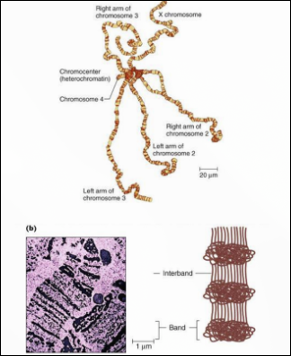
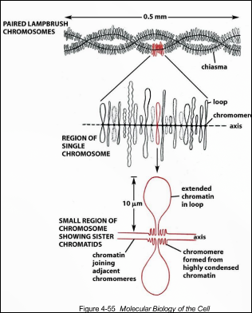
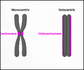

细胞核与核糖体（Nucleus and Ribosome）
讲义：细胞核与核糖体.pdf
核糖体是翻译机器，细胞核是遗传信息的库房与核糖体亚基的产地。本篇先看核糖体的结构与翻译循环，再看核被膜、核孔与亲核蛋白运输，最后落到染色质—染色体—核仁这条“压缩与表达”的主线。
一、核糖体（Ribosome）
存在与本质
核糖体几乎存在于所有细胞中，例外是某些高度分化的细胞，如哺乳动物成熟红细胞。它没有生物膜，本质是核酶（ribozyme）——催化肽键的肽酰转移酶活性来自 rRNA，而非蛋白质。
大小亚基常游离于细胞质基质中，只有小亚基结合 mRNA 后，大亚基才会结合——装配顺序本身就是翻译起始的调控点。
1.1 沉降系数
| 类型 | 大小亚基 | 完整核糖体 |
|---|---|---|
| 原核 | 50S + 30S | 70S |
| 真核 | 60S + 40S | 80S |
为什么不直接相加
沉降系数（S）反映沉降行为而非质量：亚基结合后构象改变、摩擦系数下降，50S + 30S 得到 70S 而非 80S。原核 70S 与真核 80S 的差异，为选择性作用于细菌核糖体的药物提供了结构基础。
1.2 三个 tRNA 位点
核糖体有四个 RNA 结合位点，即 1 个 mRNA 位点 + 3 个 tRNA 位点：
| 位点 | 全称 | 结合对象 |
|---|---|---|
| A 位 | aminoacyl site | 新进入的、带氨基酸的 tRNA |
| P 位 | peptidyl site | 延伸中、带着肽段的 tRNA |
| E 位 | exit site | tRNA 离开时的位点 |
这张图把核糖体“拆开”给你看：黄色壳体是大亚基，蓝色是小亚基，两者夹出一条供 mRNA 穿行的通道。图上一共标了五个层次的位点：
- A 位点（aminoacyl-tRNA）：新来的、带氨基酸的 tRNA 从这进；
- P 位点（peptidyl-tRNA）：正在延伸的肽链挂在这；
- E 位点（exit）：卸完货的 tRNA 从这离开；
- mRNA 结合位点：横贯小亚基，把 A→P→E 串成一条线；
- 5S 位点与肽链出口位点：都位于大亚基，前者是 5S rRNA 所在，后者是新肽链穿出的隧道口。
读图诀窍是顺着 mRNA 走：mRNA 上的密码子依次经过 A、P、E，所以 A→P→E 既是空间顺序，也是时间顺序——“入口—加工—出口”。注意三个 tRNA 位点都骑在大小亚基的交界上，而不属于任何单独一个亚基，这正是两个亚基必须装配成一个整体才叫“核糖体”的原因。
图：核糖体上与蛋白质合成有关的结合位点与催化位点——A（aminoacyl-tRNA）、P（peptidyl-tRNA）、E（exit）三个 tRNA 位点，mRNA 结合位点，5S 位点与肽链出口位点。
1.3 合成蛋白质的过程
- 带氨基酸的 tRNA 结合到 A 位；
- 肽酰转移酶催化形成新的肽键（本质是 rRNA 催化）；
- 转位：核糖体沿 mRNA 的 方向移动 3 个核苷酸——是核糖体移动，不是 tRNA 移动；
- E 位 tRNA 释放，另一个 tRNA 结合到 A 位；
- 终止：A 位出现 UAA / UAG / UGA，即终止密码子；
- 释放因子（RF）：RF1 识别 UAA/UAG，RF2 识别 UAA/UGA，催化蛋白质合成终止；
- 终止后蛋白质脱离核糖体，核糖体脱离 mRNA 并解离。
方向与计数都要记准
转位三要素：核糖体动、方向 、步长 3 nt。把“核糖体移动”记成“tRNA 移动”，整条循环的图景就会错位。详见 翻译。
二、细胞核、核被膜与核孔（Nucleus, Envelope and NPC）
细胞核通常一个；肝、心肌细胞可有 1–2 个，破骨细胞和骨骼肌细胞可达多个（几百个）。它约占细胞总体积的 10%，一般呈圆球状与卵圆形，形状随物种和细胞类型而变。间期核由核被膜、染色质、核仁及核体、核基质组成，功能是遗传与发育——前者储存信息，后者选择性读取。
2.1 核被膜的化学组成
- 蛋白质：20 多种，包括组蛋白、基因表达调节蛋白、DNA 和 RNA 聚合酶、RNA 酶，以及与电子传递有关的酶类；
- 脂类：卵磷脂（磷脂酰胆碱）与脑磷脂（磷脂酰乙醇胺）含量低，胆固醇和甘油三酯含量高；
- 核被膜的酶类与脂类组成与内质网相似，这是“核膜源自内膜系统”的化学证据。
2.2 结构
- 双层核膜：内核膜无核糖体附着，有核纤层附着；外核膜有核糖体颗粒，与 ER 相连；核周间隙（核周池）与内质网腔相通；
- 核孔复合体（NPC）：由核孔与孔膜区构成；
- 核纤层：贴于内核膜内侧的纤维网络。
核被膜是核质间的天然选择性屏障，调控核内外物质交换与信息交流。核膜随细胞周期解体与重建，开关是磷酸化与去磷酸化：磷酸化使核纤层与核膜离散，去磷酸化再聚合（详见 细胞分裂）。
2.3 核孔复合体（NPC）
NPC 呈渔网结构，由胞质环、核质环、辐（spoke）与中央栓组成；辐分柱状亚单位、腔内亚单位、环带亚单位，中央为中央栓/中央颗粒；蛋白组分统称核孔蛋白（Nup）。
这是一张立体剖面图，把 NPC 与核膜画在一起：上下两片脂双层分别是外核膜与内核膜，二者之间的缝隙就是核周间隙；紧贴内核膜下方的那层网格是核纤层。
从胞质侧往核侧数：纤维（伸向胞质）→ 胞质环 → 柱状亚单位（围成通道壁）→ 腔内亚单位（插在核周间隙里）→ 核质环 → 核篮（向核内张开的“鱼篓”）。中央栓堵在通道正中，像一个可移动的塞子。
“渔网”是怎么来的
胞质纤维、核质环与核篮共同织成一张上下相通的网，中间由柱状亚单位撑出通道——这就是 NPC 被称为渔网结构的原因。网的孔眼让小分子被动通过；带信号的大分子则要在网里完成“识别—递送—释放”三步，那就是主动运输。
图：核孔复合体与核膜的剖面——纤维、胞质环、柱状亚单位、腔内亚单位、核质环、核篮、中央栓，以及外核膜、内核膜与核纤层的位置关系。
双功能、双向性
NPC 是双功能（被动 + 主动）、双向性的亲水通道：既介导蛋白质入核，也介导 RNA 与核蛋白颗粒出核。
主动运输有三个特征：高度选择性、限制运输颗粒的大小、信号识别与载体介导，并表现出饱和动力学——载体数量有限，速率有上限。详见 fish-trap。
2.4 亲核蛋白与运输信号
亲核蛋白是需要进入细胞核才能发挥功能的蛋白质，分两类：一次性转运并停留核内的（如组蛋白、核纤层蛋白）；穿梭于核质之间的（如 importin 本身）。
| 信号 | 功能 | 受体 |
|---|---|---|
| NLS（核定位序列） | 引导亲核蛋白入核 | importin |
| NES（核输出信号） | 引导 RNP 出核 | exportin |
NLS 的三个特征
NLS 富含碱性氨基酸（Lys、Arg），还常含 Pro；可为连续序列，也可分成两段；转运后不被切除——是可反复使用的“通行证”。Ran 蛋白属 G 蛋白，水解 GTP 供能，调节货物与受体复合体的形成与解体，为运输提供方向性。
图上方那几行文字就是五步流程，下方五幅小图一一对应；读图时把文字与画面按顺序配对：
- 识别：亲核蛋白的 NLS 被 importin α 认出，与可溶性的 importin α/β 异二聚体结合，形成转运复合物；
- 靠泊：在 importin β 介导下，复合物结合到 NPC 的胞质纤维上；
- 穿孔：NPC 改变构象，把复合物从胞质面送到核质面；
- 卸载：在核质面遇到 Ran-GTP，复合物解体，亲核蛋白被释放；
- 回收：受体亚基带着 Ran 回到胞质，Ran-GTP 水解为 Ran-GDP 并与 importin β 解离；Ran-GDP 再返回核内，换回 GTP 状态。
方向到底由谁给
五步里唯一“不可逆”的是 Ran 的梯度：核内 Ran-GTP 高、胞质 Ran-GDP 高。核内高 Ran-GTP 让货物卸车，胞质水解让受体空车返回。所以运输的方向性不是 NPC 本身给的，而是 Ran 梯度给的——这也是 Ran 必须属于 G 蛋白、必须水解 GTP 的理由。
图：图 9-5 亲核蛋白从细胞质向细胞核输入的过程——NLS 被 importin α 识别、经 importin β 与胞质纤维结合、穿过 NPC 后在核质面与 Ran-GTP 结合并解离，Ran-GDP 返回胞质。
2.5 核纤层（Nuclear Lamina）
核纤层由 lamin A、B、C 三种核纤层蛋白形成纤维网状结构，紧贴内核膜。功能是结构支撑、调节基因表达、调节 DNA 修复、与细胞周期有关；异常可导致早衰症——核膜机械稳定性下降，是“骨架—核膜—疾病”直接相连的实例。
一句话串起来
核纤层既是中间丝家族的一员，又是核膜的力学衬里；抓住“结构支撑 + 基因表达调控”两面即可。
三、染色质与核小体
染色质处于间期，由 DNA、组蛋白、非组蛋白与少量 RNA 组成，是细胞内基因存在与发挥功能的结构基础——与基因组直接相关的活动都在染色质水平进行。基因组指某一生物细胞中储存于单倍体染色体组中的总遗传信息，已知最小的基因组来自支原体。
3.1 染色质 DNA
按序列性质分四类：蛋白质编码序列；编码 rRNA、tRNA、snRNA、组蛋白的串联重复序列；含重复序列的 DNA；未分类的间隔 DNA。
二级结构是两条核苷酸反向平行盘绕的双螺旋：
| 类型 | 特点 |
|---|---|
| B-DNA | 标准双螺旋 |
| A-DNA | B 型的变构 |
| Z-DNA | 左手螺旋 |
3.2 染色质蛋白
组蛋白是碱性蛋白质，富含 Arg、Lys，可与酸性 DNA 紧密结合，一般没有结合特异性：H2A、H2B、H3、H4 无组织和种属特异性，结合在 DNA 螺绕环内，进化保守；H1 有一定特异性，结合 linker DNA。
图名只写 “Nucleosomes”，却把四个要素都标全了：中间彩色的圆盘是组蛋白八聚体（H2A、H2B、H3、H4 各两个），蓝色双螺旋是 DNA，缠绕在八聚体外圈；右下一颗紫色的 H1 卡在 DNA 进出的位置；两端伸展出去的则是 linker DNA。
读这张图抓住两件事就够了：八聚体是“线轴”，DNA 是“线”，H1 是“卡扣”；以及 H1 不在八聚体内部——它结合在核小体之外，负责把相邻核小体“压紧”，这是把“串珠”收成更粗纤维的第一步。
图：核小体结构——H2A、H2B、H3、H4 组成的组蛋白八聚体，DNA 缠绕其上，H1 位于 DNA 进出端，两端为 linker DNA。
非组蛋白相反：有序列特异性、功能多样。
与组蛋白“无差别缠线”的做法相反，这张图画的是非组蛋白的“定点结合”：同一条 DNA 上同时坐着 cJun、ATF-2、IRF-3、IRF-7、p50/p65（NF-κB 的两个亚基）以及多个 HMG 蛋白（图中标 HMG1、HMG I）。每个蛋白都贴在自己的特定位置上，彼此还挨得很近。
这张图要读出的结论是：非组蛋白按序列“认位”，所以能在同一段 DNA 上组成组合式的调控平台——换一个转录因子，读出的基因就不同。HMG 蛋白更像“弯折器”，把 DNA 掰出角度，好让其他因子就位。
一组对照就够
组蛋白：碱性、无序列特异性、进化保守、只负责包装；非组蛋白：有序列特异性、功能多样、负责调控。前者是“纸”，后者是“写在纸上的批注”。
图：非组蛋白以序列特异方式结合同一条 DNA——cJun、ATF-2、IRF-3、IRF-7、p50/p65 与多个 HMG 蛋白（HMG1、HMG I）共同构成调控复合体。
3.3 核小体
核小体包括 约 200 bp 的 DNA、一个组蛋白八聚体（2 个 H2A、2 个 H2B、2 个 H3、2 个 H4）与一个 H1。其中 146~147 bp 的核心 DNA 缠绕 1.75 圈，其余为 linker DNA（约 60~80 bp）。
这是用结构解析得到的核小体三维模型：蓝色是 DNA 双螺旋绕出的超螺旋轨迹，中央彩色的是组蛋白八聚体；右上角的小图把“圆盘 + 绕线”的关系抽象成示意，并把 H2A、H2B、H3、H4 与 DNA 一一对应标出。
从三维模型能直接看清两件事：DNA 不是贴在盘表面，而是绕着盘走；盘的两侧就是 DNA 的进出端，也就是 H1 与 linker DNA 的位置。把这张图和上一张“示意图”对起来看，“线轴 + 绕线”的形态就立起来了。
图：核小体三维结构模型——DNA 双螺旋绕组蛋白八聚体盘绕；右上小图把 H2A、H2B、H3、H4 与 DNA 的对应关系抽象示意。
3.4 染色体组装
裸露 DNA 压缩 7 倍成核小体，6 个核小体形成直径 30 nm 的螺线管；螺线管压缩 40 倍成超螺线管；超螺线管压缩 5 倍成染色单体；合计压缩 8400 倍（7 × 6 × 40 × 5，连乘不连加）。
这张图是一条压缩流水线，从左往右读：
细胞核内（标出 Nuclear Pore）的染色质是松散的线团 → 放大一层得到 DNA 双螺旋 → 双螺旋绕上 组蛋白（Histones），成为一串核小体（Nucleosomes） → 核小体链盘绕成螺线管（Solenoid Chromatin Fiber） → 最后折成右侧的浓缩染色体，其上标出两端的 Telomere（端粒）、中间的 Centromere（着丝粒） 与两侧的 Arm（臂）。
读图的关键是层级：每一级都是“把上一级再折一次”，所以压缩倍数必须连乘而不是相加。图上没有标数字，但箭头方向已经说明“越往右越紧”；把 7 × 6 × 40 × 5 乘起来，才是那条常被记错的 8400 倍。
图：染色质与浓缩染色体的结构层级——由核孔旁的染色质，经 DNA 双螺旋、组蛋白、核小体、螺线管染色质纤维，最终形成标有端粒、着丝粒与染色体臂的浓缩染色体。
染色体骨架—放射环模型：30 nm 的染色线折叠成环，沿染色体纵轴排列，由中央向四周伸出，构成放射环。
3.5 常染色质与异染色质
| 类型 | 压缩状态 | 染色 | 说明 |
|---|---|---|---|
| 常染色质 | 压缩程度低、伸展 | 浅 | 转录活跃区 |
| 异染色质 | 折叠程度高、聚缩 | 深 | 分结构型与兼性 |
结构型（组成型）在整个细胞周期都聚缩，见于着丝粒区、端粒、次缢痕，相对简单、高度重复；兼性指某些阶段常染色质聚缩、丧失转录活性，如巴氏小体。
四、染色体（Chromosome）
染色体是间期染色质紧密组装的结果，由两条姐妹染色单体组成，彼此以着丝粒连接。按着丝粒位置分中着丝粒、亚中着丝粒、亚端着丝粒、端着丝粒四类。
这张图用四根染色体把“按着丝粒位置分类”讲完，从左到右：
- 中着丝粒染色体：着丝粒（即主缢痕）在正中，两臂等长；
- 亚中着丝粒染色体：着丝粒明显偏一侧，短臂标 p、长臂标 q；
- 亚端着丝粒染色体：着丝粒靠近末端，短臂一侧还标出次缢痕，以及由细柄相连的随体；
- 端着丝粒染色体：着丝粒几乎就在端部。
记法：p 是短臂、q 是长臂；名称里的“中 / 亚中 / 亚端 / 端”，说的都是着丝粒离中心有多远。还要注意随体与次缢痕都长在短臂一侧，而次缢痕常是 NOR 所在——这两条线索在讲“随体”和“核仁组织区”时会反复用到。
图：按着丝粒位置划分的四类染色体——中着丝粒、亚中着丝粒（标短臂 p、长臂 q）、亚端着丝粒（标出次缢痕与随体）、端着丝粒；着丝粒即主缢痕。
着丝粒与动粒：动粒分动粒结构域（内板、中间间隙、外板、纤维冠）、中央结构域、配对结构域。
图 9-24 分“整体 → 局部”两级放大。左图先定位着丝粒（主缢痕）夹在两条染色体臂之间；中图把这一小段放大，标出三个结构域的层叠关系——最内侧是配对结构域（姐妹染色单体彼此贴合处），中间是中央结构域，最外侧朝向胞质的一面是动粒结构域；右图再把动粒本身拆开，从内到外依次是内板 → 中间间隙 → 外板 → 纤维冠。
三个域，三种任务
配对结构域管“把姐妹染色单体黏在一起”，中央结构域管“把着丝粒组织起来”，动粒结构域管“抓微管”。这也解释了动粒为什么是“三明治”：内板提供底座，中间间隙留出调控与检查的空间，外板与纤维冠负责与纺锤体微管结合、并纠正错误连接。
图：图 9-24 着丝粒的结构域组织——由内到外为配对结构域、中央结构域、动粒结构域；动粒再分为内板、中间间隙、外板与纤维冠，左侧标出着丝粒（主缢痕）与染色体臂。
其他主要结构：次缢痕常含核仁组织区（NOR）、富含 rRNA 基因；随体位于染色体短臂末端；端粒通过不断复制减缓染色体的衰老，详见 端粒与端粒酶。
这张图把端粒酶的工作拆成四步，纵向往下读：
- 顶部是一条母链，3’ 端为 TTGGGG 重复序列；与它配对的新合成的后随链只剩一小段 AACC，末端空出缺口——这就是“末端复制问题”的样子；
- 端粒酶结合：绿色的带 RNA 模板的端粒酶贴上去，其 RNA 模板与母链 3’ 端配对；
- 端粒延伸：以端粒酶 RNA 为模板把母链的 3’ 端延长（图中序列明显变长），端粒酶随后移位、可再延伸一轮；
- 补后随链：最后由 DNA 聚合酶以延长后的母链为模板，把后随链补齐（底部箭头标出聚合酶的作用方向）。
读图要抓住一个分工：端粒酶只延长母链的 3’ 端，它不负责补后随链；后随链仍由普通的 DNA 聚合酶合成。所以“端粒延长”是两步而不是一步——这正好解释了为什么端粒酶活性降低后，染色体仍会一轮轮变短。
图：端粒酶延长端粒的过程——母链 3’ 端 TTGGGG 重复与后随链 5’ 端的缺口；端粒酶以其 RNA 模板（ACCCCAAC）延伸母链，随后由 DNA 聚合酶补合成后随链。
4.1 核型与带型
核型是染色体组在有丝分裂中期的表型，包括染色体数目、大小、形态特征的总和；把全部染色体按特征画出并按长短、形态排列即核型模式图。带型指显带后的带纹形态：G、Q、R 带分布在整个染色体上，C、T、N 带只在少数特定区域显现（详见 染色体带）。
两类异常各举一例
核型异常：唐氏综合征；带型异常：猫叫综合征。前者是“数目与大结构”层面出错，后者是“精细带纹”层面出错，正对应核型与带型两级分辨率。
4.2 特殊染色体
| 类型 | 来源与特点 |
|---|---|
| 多线染色体 | 来源于核内有丝分裂，常见于双翅目昆虫组织细胞；多线化细胞处于永久间期，带与间带都有基因 |
| 灯刷染色体 | 普遍存在于卵母细胞尤其两栖类；细胞进行 MI 时停留在双线期；与营养物质储备有关，大部分 DNA 以染色粒存在、无转录活性，侧环是 RNA 活跃转录区、合成前体 mRNA |
| 弥散性着丝粒染色体 | 着丝粒逐渐分布到两条臂上 |
| B 染色体 | 正常染色体组（A 组）之外额外存在；数量可变、非必需、会偏分离 |
三张图对应三类“特殊染色体”，并排放是为了让你看出它们的异常之处各不相同：
① 多线染色体（左图上半）：各染色体臂在染色中心（chromocenter，异染色质）处聚拢，图上分别标出 X 染色体与第 2、3、4 号染色体的左右臂，比例尺 20 μm。下方 (b) 是电镜照片与示意图的对照，标出带（Band）与间带（Interband），比例尺 1 μm——带是深染的致密区，间带是浅染的疏松区，两者都含基因，所以“带”不等于“无功能区”。
② 灯刷染色体（中图）：一对同源染色体在交叉（chiasma）处相连，总长标 0.5 mm；放大后看到一条轴上串着许多染色粒（chromomere），每个染色粒伸出一个侧环（loop），环内是伸展的染色质，标尺 10 μm；再放大则是姐妹染色单体与由高度浓缩染色质构成的染色粒。环 = 转录活跃区，染色粒 = 压缩储存区，一松一紧同一根轴上并存。
③ 单着丝粒 vs 全着丝粒（右图）：左为 Monocentric，着丝粒集中在一处；右为 Holocentric，holocentromere 沿两条臂弥散分布——这就是“弥散性着丝粒染色体”。
三张图各改写了哪一步
多线染色体改写的是复制与分裂的耦合（复制了却不分开）；灯刷染色体改写的是减数分裂的进程（停在双线期继续转录）；弥散性着丝粒改写的是着丝粒的位置规则（不集中也能挂微管）。三者都不是“病理”，而是特定细胞把常规流程改写的产物。
  
图：三类特殊染色体——多线染色体（标 X 染色体、2/3/4 号染色体臂与染色中心，比例尺 20 μm；下方电镜与示意对照标出带与间带，1 μm）；灯刷染色体（同源染色体经交叉相连，0.5 mm；轴上有染色粒与侧环，环内为伸展染色质，10 μm）；单着丝粒与全着丝粒（弥散性着丝粒）对比。
五、核基质、核仁与核体（Nuclear Matrix and Nucleolus）
核基质是去除 DNA、组蛋白与 RNA 后残留在核内的纤维蛋白网架，也称核骨架，含少量 RNA，与 DNA 复制、基因表达、染色体组装与构建密切相关。
核仁通常是一个或多个均质球形小体，大小、形状和数目随生物种类、细胞类型和代谢状态而变；它是 rRNA 合成、加工和核糖体亚基组装的场所，核心功能是核糖体的生物发生，课上还提到它涉及 mRNA 的输出与降解。
图左上角是电镜照片，标出三个区域：细颗粒组分（granular component）、深色的致密纤维组分（dense fibrillar component）与浅色的纤维中心（fibrillar centre）；右侧示意图把它们画成同心排布——几个纤维中心（内含 rDNA，并标出 rRNA），外面包一圈致密纤维组分，最外层散布着颗粒组分（RNP）。
这套“由内向外”的排布，本身就是一条流水线：rDNA 在纤维中心转录 → 新生 rRNA 在致密纤维组分里加工、并开始与蛋白组装 → 颗粒组分中出现正在成熟的核糖体亚基前体 → 出核。三个组分对应三个环节，缺一环核仁就“不出货”。
为什么核仁的大小会随代谢状态变
因为核仁不是固定结构，而是rRNA 转录的“现场”：转录越旺盛，纤维中心与致密纤维组分越发达、核仁越大越明显；细胞进入分裂期转录停止，核仁就解体消失，到分裂末期再在 NOR 处重建。看核仁的大小与数目，其实是在看这个细胞“造核糖体”的忙闲程度。
图：核仁的结构——电镜照片标出颗粒组分、致密纤维组分与纤维中心；示意图中纤维中心含 rDNA 并标出 rRNA，外围为致密纤维组分，最外层散布含 RNP 的颗粒组分。
| 组分 | 电子密度 | 组成 |
|---|---|---|
| 致密纤维组分 | 高 | rRNA 密度高，含核仁纤维蛋白、核仁蛋白等特异性结合蛋白 |
| 纤维中心（FC） | 低 | 含 rDNA、RNA 聚合酶 I 与转录因子；FC 是 NOR 在间期核的副本 |
| 颗粒组分 | — | 含 RNP，可被蛋白酶和 RNase 消化，本质是正在加工、成熟的核糖体亚基前体 |
易错点与速查
常见错误
- 把核糖体当膜性细胞器：它无生物膜，本质是核酶。
- 沉降系数直接相加：50S + 30S = 70S，不是 80S。
- 以为大亚基先结合 mRNA：是小亚基先结合，大亚基随后加入。
- 转位说成 tRNA 移动：移动的是核糖体，方向 5’→3’，步长 3 nt。
- RF 识别谱记反：RF1 识别 UAA/UAG，RF2 识别 UAA/UGA。
- NLS 与 NES 混用：NLS 入核（importin），NES 出核（exportin）。
- 核小体只记八聚体：还有 H1 与 linker DNA；200 bp 的构成要能拆开说。
- 结构型与兼性异染色质混淆：前者整个周期都聚缩，后者只在特定阶段聚缩（如巴氏小体）。
- 把核仁只当“核里的球”：三个组分对应 rRNA 转录、加工与亚基装配三个环节。
- 把 FC 与 NOR 割裂：FC 就是 NOR 在间期核中的副本。
与生物工程的联系
从核糖体到核的技术落点
(1) 70S / 80S 差异与抗生素选择性
原核 70S 与真核 80S 在 rRNA 与蛋白组成上不同，使许多抗生素能专一结合细菌核糖体的 A 位或肽酰转移酶中心，而不抑制人体细胞质核糖体。这是“结构差异 → 选择性毒性”的经典逻辑，也是抗菌药物筛选的起点。
(2) 重组蛋白表达：终止密码子与释放因子
翻译终止依赖 A 位出现 UAA/UAG/UGA 与 RF1/RF2 的识别。构建表达载体时，终止密码子选择、串联终止子与读通风险都会影响全长重组蛋白的比例；理解释放因子的识别谱，才能解释同一插入片段在不同宿主中产量不同。
(3) NLS–importin–Ran：把货物送进核
外源蛋白或核酸复合物要进入核内发挥作用，可融合 NLS，借 importin 与 Ran 的梯度跨 NPC 转运。核转染与基因编辑组件递送都建立在这套机制上；NPC 的尺寸限制则决定裸 DNA 与蛋白复合体需要怎样的包装策略。
(4) 染色质压缩与基因递送
DNA 需经核小体—螺线管—超螺线管逐级压缩 8400 倍才能装进染色体。外源 DNA 入核后同样面对组蛋白包装与异染色质沉默：载体设计中的启动子选择与染色质开放元件，本质上都在对抗“压缩即沉默”的默认状态。
相关笔记
- 翻译 — 核糖体 A/P/E 位点与翻译延伸、终止
- fish-trap — 核孔复合体的渔网结构与运输模型
- 染色体带 — 显带技术、G/Q/R 与 C/T/N 带
- 端粒与端粒酶 — 端粒复制与染色体衰老
- 减数 — 灯刷染色体所处的减数分裂背景
- 细胞分裂、细胞骨架 — 核膜崩解重建、核纤层与中间丝的连接
整理自：课堂笔记及参考课件